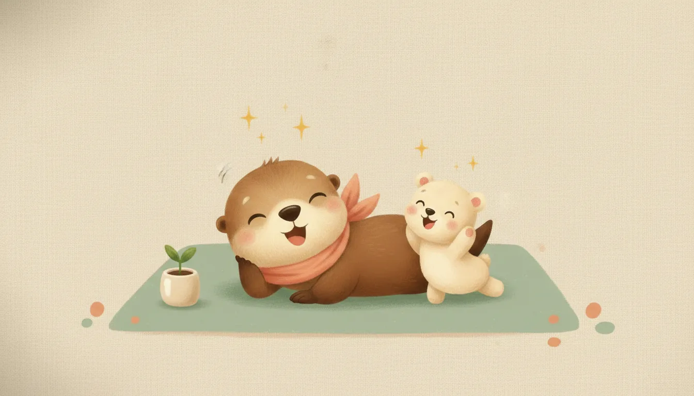
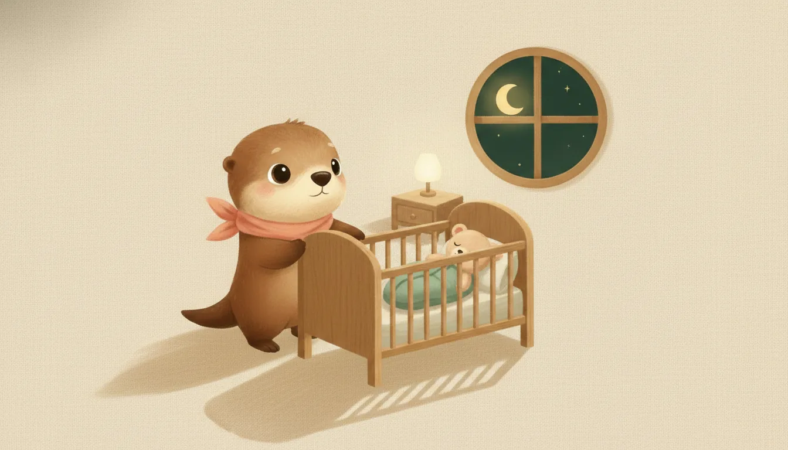
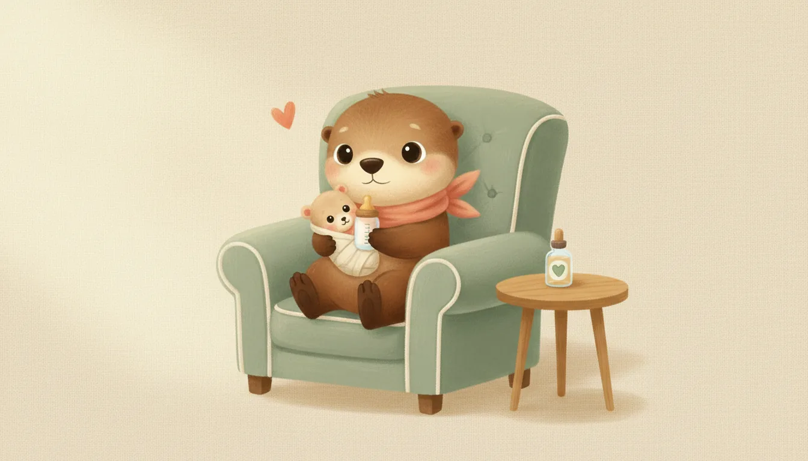
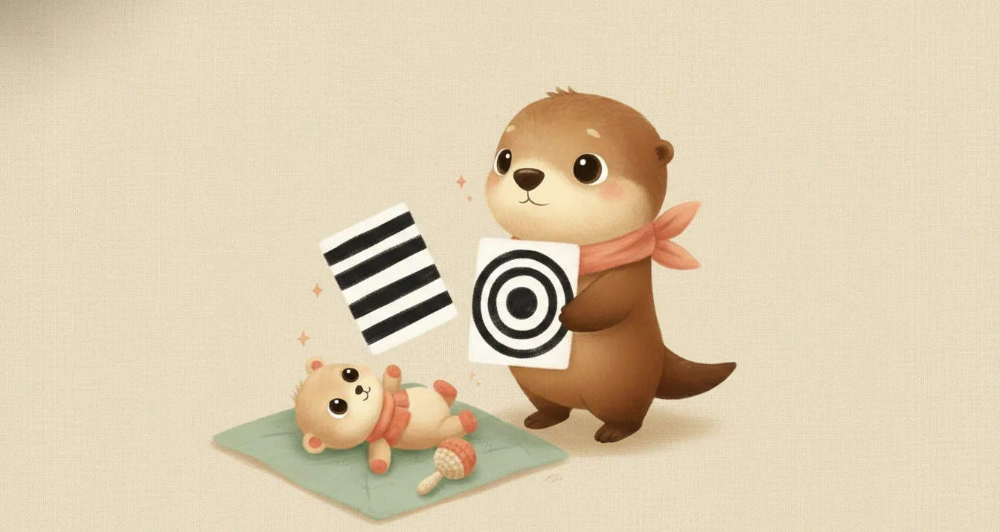

Ebeveynler için · Ay Ay Bebek Rehberi
1 aylık bebek: bu ay sizi ne bekliyor?
İlk ay, bebeğiniz kadar sizin de dünyaya alıştığınız aydır. Bu sayfa, 1 aylık bir bebeğin neler yaptığını, nasıl beslenip nasıl uyuduğunu, beyin gelişimini nelerin desteklediğini ve hangi durumlarda hekime başvurmak gerektiğini tek yerde toplar.
Diğer ayların sayfaları hazırlandıkça buraya eklenecek.
Bir bakışta 1. ay
2–4 saatlik parçalarla
istedikçe
emzirme mesafesi
en iyi beslenme göstergesi
Gelişim: bu ay bebeğiniz ne yapar?

Aşağıdakiler çoğu bebeğin 1. ayın sonuna doğru yaptıklarıdır; her bebek kendi hızında ilerler, biraz erken ya da geç olması çoğu zaman normaldir.
Hareket
- Eller çoğunlukla yumruk hâlindedir; hareketler kısa ve sıçrayıcıdır.
- Yüzüstü pozisyonda başını kısa süre kaldırıp yana çevirebilir.
- Yenidoğan refleksleri (emme, arama, yakalama, irkilme) aktiftir.
- Ellerini yüzüne ve ağzına doğru götürmeye başlar.
Görme ve işitme
- En net 20–30 cm mesafeyi görür; yüzleri ve siyah-beyaz zıt desenleri tercih eder.
- Yavaş hareket eden bir nesneyi kısa süre gözüyle izleyebilir; gözlerde ara sıra kayma bu ayda normaldir, kalıcı kayma ise muayene gerektirir.
- Sesinizi tanır; yüksek sese irkilir, tanıdık sesle sakinleşir.
İletişim
- Ağlama bu ayın ana iletişim yoludur; genellikle 6. haftada doruğa ulaşır, sonra azalır.
- Boğazdan gelen küçük sesler çıkarmaya başlar; asıl "sosyal gülümseme" 6–8. haftalarda gelir.
- Kucaklamak ve hızla yanıt vermek bebeği şımartmaz; bu yaşta güvenli bağlanmanın temelidir.
Uyku ve güvenli uyku

Gece-gündüz ritmi henüz oluşmadığı için sık uyanmak bu ayda normaldir ve beslenme için gereklidir. Gündüzleri aydınlık ve olağan ev sesli, geceleri karanlık ve sessiz tutmak ritmin kurulmasını hızlandırır. Güvenli uyku kuralları ise pazarlıksızdır:
- Her uykuda sırtüstü yatırın.
- Sert ve düz yatak; beşikte yastık, yorgan, battaniye, koruyucu ya da oyuncak olmamalı.
- İlk 6 ay aynı odada, kendi yatağında uyusun; aynı yatağı paylaşmayın.
- Odayı serin tutun, bebeği aşırı giydirmeyin; battaniye yerine uyku tulumu tercih edin.
- Bebeğin bulunduğu ortamda asla sigara içilmemelidir.
Ayrıntı için: Çocuklarda uyku düzeni rehberi.
Beslenme: ne verilir, ne verilmez?

Bu ayın menüsü tek kalemdir: anne sütü — istedikçe, günde 8–12 ve üzeri öğün. Sık sık, kümeler hâlinde emmek ve yaklaşık 3. haftadaki büyüme atağında iştahın artması normaldir. Anne sütü yoksa ya da yetmiyorsa mama, hekim önerisiyle ve kutu talimatına birebir uyularak hazırlanır. Tüm bebeklere ilk günlerden itibaren günde 400 IU D vitamini damlası önerilir; aile sağlığı merkezlerinden ücretsiz temin edilebilir.
Bu ayda asla verilmeyecekler
- Su: Anne sütünün yaklaşık %90'ı zaten sudur; ayrıca verilen su küçük mideyi doldurur ve tuz-mineral dengesini bozabilir.
- Bal: 12 aydan önce bebek botulizmi riski taşır — tadına baktırmak dahil verilmez.
- İnek/keçi sütü: 1 yaşından önce içecek olarak uygun değildir.
- Bitki çayları, şekerli su, rezene, anason: Güvenli değildir.
- Her türlü ek gıda: Sindirim sistemi hazır değildir; ek gıda 6. ayda başlar.
Ek gıda dönemi için: Ek gıdaya nasıl başlarız?
Oyun ve beyin gelişimi

İlk yıllarda bebek beyni saniyede bir milyondan fazla yeni sinir bağlantısı kurar. Bu ayda en etkili "oyuncak" pahalı bir şey değildir: yüzünüz, sesiniz ve teninizdir.
- Konuşun, söyleyin, okuyun: Alt değiştirirken olan biteni anlatın, ninni söyleyin; Amerikan Pediatri Akademisi doğumdan itibaren yüksek sesle kitap okumayı önerir. Bebeğiniz ses çıkardığında karşılık verin — bu karşılıklı "servis-karşılama", beyin mimarisini inşa eden temel etkileşimdir.
- Yüzüstü egzersiz (tummy time): Uyanıkken ve gözetim altında, günde 2–3 kez 2–3 dakika. Boyun-omuz kaslarını güçlendirir, baş şeklini korur. Bebek huysuzlanırsa göğsünüzde yüzüstü durması da sayılır.
- Siyah-beyaz kontrast kartlar: 20–30 cm mesafeden gösterin; bu ayda renkli oyuncaklardan daha etkilidir.
- Yumuşak sesli çıngırak: Yavaşça sağdan ve soldan çalarak sese yönelmeyi destekleyin.
- Ten tene temas: Isıyı, kalp ritmini ve stres yanıtını düzenler; bağlanmayı güçlendirir.
- Ekran: Bu yaşta hiç önerilmez; 18–24 aydan önce ekran, yalnızca görüntülü aile aramasıyla sınırlı tutulmalıdır.
Bu ayın kontrol listesi
- 1. ay sağlam çocuk muayenesi: Kilo, boy ve baş çevresi eğriye işlenir; sarılık, göbek, kalça ve kalp değerlendirilir; emzirme düzeni konuşulur.
- Taramalar: Topuk kanı ve işitme taraması tamamlanmış, sonuçları sorulmuş olmalı.
- D vitamini başlanmış olmalı; K vitamini doğumda yapılmıştır.
- Aşı durumu: Doğumda Hepatit B'nin ilk dozu yapılmış olmalıdır; ulusal takvimde 1. ayda rutin aşı yoktur. Sıradaki aşı randevusu 2. ayın sonundadır (BCG, KPA ve beşli karma + Hepatit B). Ayrıntı için: Hangi ay hangi aşı?
Ne zaman hekime başvurmalı?
- 38°C ve üzeri ateş: 3 aydan küçük bebekte ateş her zaman acildir — beklemeden hastaneye.
- Emmeyi reddetme, çok zayıf emme veya günde 4'ten az ıslak bez.
- Beslenmek için bile uyandırılamayacak kadar uykuya meyil; belirgin gevşeklik ya da katılık.
- Kollara-bacaklara yayılan ya da 2. haftadan sonra sürüp artan sarılık.
- Dakikada 60'ın üzerinde hızlı solunum, inleme, göğüste çekilmeler, morarma.
- Fışkırır tarzda ya da yeşil renkli kusma.
- Yüksek seslere hiç tepki vermeme, yüzlere hiç odaklanmama.
Acil bir durumda 112'yi arayın veya en yakın acil servise başvurun. Gece gelişen ateş için: Gece ateş rehberi.
Anneye not

Bu ay bebeğiniz kadar siz de yenisiniz; az uyku, hormonlar ve öğrenme telaşının hepsi geçicidir ve yardım istemek zayıflık değildir. İki haftadan uzun süren yoğun hüzün, sürekli ağlama isteği ya da bebeğe karşı ilgisizlik hissi, "lohusalık hüznünden" fazlası olabilir: doğum sonrası depresyon sık görülür ve tedavi edilebilir. Böyle hissediyorsanız lütfen hekiminizle paylaşın.